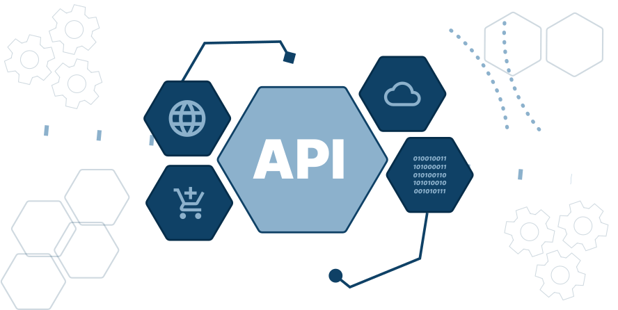

De toepassingslaag is de bovenste laag van het drielagenmodel en is belangrijk voor hoe gebruikers met een computer werken. Deze laag bevat alle programma's en apps die je dagelijks gebruikt, zoals tekstverwerkers, webbrowser en spellen. Het doel van de toepassingslaag is om een makkelijke en gebruiksvriendelijke interface te bieden.
Binnen de toepassingslaag zijn apps (toepassingen) en API's (Application Programming Interfaces) belangrijk. Apps zijn specifieke programma's die functies aanbieden voor gebruikers, zoals sociale media-apps, kantoorsoftware en spelletjes. Ze zijn ontworpen om efficiënt en gebruiksvriendelijk te zijn. API's daarentegen zijn sets van regels en protocollen die het mogelijk maken voor verschillende softwaretoepassingen om met elkaar te communiceren. Ze stellen ontwikkelaars in staat om functionaliteiten van andere applicaties of services in hun eigen apps te integreren, waardoor de mogelijkheden van de toepassingslaag verder worden uitgebreid.